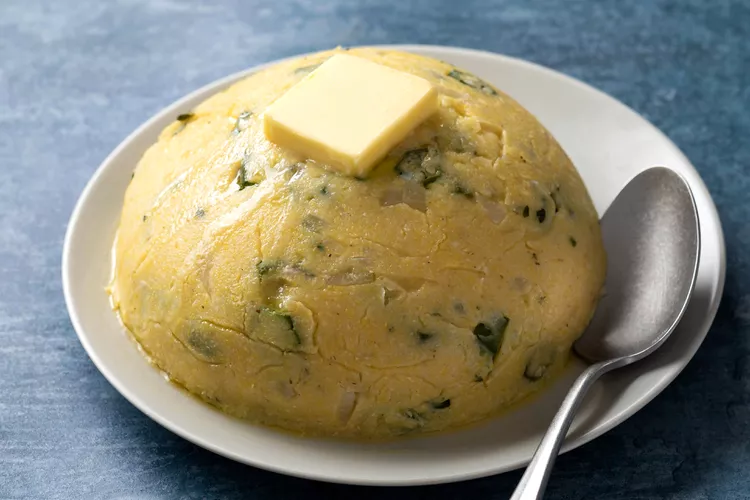

Coo Coo Recipe

Description
Coo Coo is a beloved Trinidadian and Caribbean dish that combines cornmeal and okra. It is a versatile side dish often served alongside meats and stews. The mixture is prepared by simmering finely chopped okra with onions, garlic, and coconut milk, creating a creamy and flavorful base. Cornmeal is gradually added, resulting in a thick and smooth consistency. Seasoned with herbs and spices, Coo Coo is served in a dome shape and is cherished for its hearty taste and ability to complement a variety of meals.
With its unique blend of ingredients, Coo Coo is a comforting and satisfying dish in the Caribbean cuisine. Whether enjoyed with stewed fish, curried chicken, or as a standalone delight, Coo Coo offers a delightful combination of textures and flavors that make it a favorite among locals and visitors alike.
Ingredients
- Okra
- Cornmeal
- Onion
- Garlic
- Tomato (optional)
- Coconut milk
- Thyme (optional)
- Chives (optional)
- Pepper
- Salt
Steps
- Finely chop the okra and set it aside.
- In a pot, sauté finely chopped onion and garlic until they become fragrant and translucent.
- If desired, add diced tomatoes to the pot and cook until they soften.
- Add the chopped okra to the pot and cook for a few minutes until it starts to soften.
- Pour in the coconut milk and bring the mixture to a simmer.
- Gradually add cornmeal while continuously stirring to avoid lumps. Stir until the mixture thickens and reaches a smooth consistency.
- Season with thyme, chives, pepper, and salt according to taste. Stir well to incorporate the flavors.
- Continue cooking and stirring the mixture for a few more minutes until it reaches the desired thickness.
- Once the Coo Coo has thickened, remove it from the heat.
- Serve the Coo Coo hot as a side dish with your favorite meat, fish, or stew.
Back to homepage